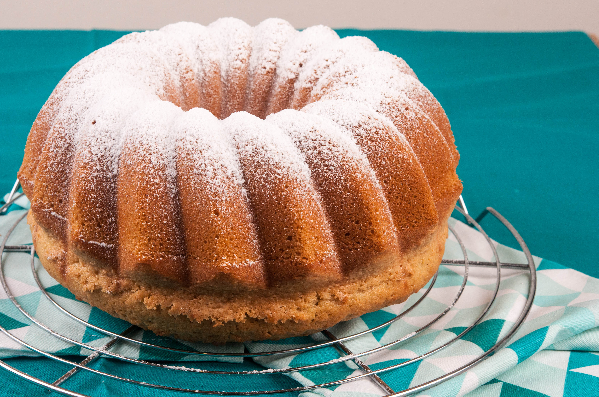

"Рецепта за кекс"

Първата стъпка от рецептата за лесен кекс е подготовката на течната смес.
Разбивате много добре захарта с яйцата с миксер или тел за разбиване,
след това добавяте киселото мляко, в което сте разбъркали содата и отново разбърквате.
Добавяте олиотои ванилията и отново разбърквате.
Пресявате брашното заедно с бакпулвера и малко по малко,
при непрекъснато разбиване го добавяте към течната смес и разбивате до получаване на гладна смес.
Намазвате формата за кекс с олио и изсипвате сместа, като оставате 1 кафена чаша от нея,
в която добавяте какаото, за да я оцветите.
Изсипете какаовата смес равномерно върху ваниловата.
Печете кекса в предварително загрята на 180 градуса фурна за около 40 минути,
като проверявате дали е изпечен като го бучнете с клечка за зъби - ако излезе суха лесният кекс е готов.
След като изстине поръсвате кекса с пудра захар.